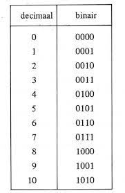

Binaire getallen
Naast 'gewone' cijfers, bestaat er ook een binair getallenstelsel. Bianir betekent 'tweedelig'. Dit is een tweetallig getallenstelsel dat alleen maar bestaat uit de cijfers 0 en 1. Door deze in een bepaalde volgorde te zetten betekenen ze getallen. Het is een soort code die vooral wordt gebruikt bij computers. Een 0 of een 1 noem je een bit. Je kunt getallen maken door bits achter elkaar te zetten.
Hoe werkt het binair stelsel?
Je hebt de getallen 1, 2, 4, en 8. Hierboven heb je gelezen dat je de cijfers 1 en 0 gebruikt om een cijfer binair te schrijven. Je zet te getallen 1, 2 , 4 en 8 op volgorde van groot naar klein (8, 4, 2, 1). Vervolgens tel je de getallen bij elkaar op totdat je het gewenste cijfer hebt.
Als je bijvoorbeeld het getal 16 wilt maken doe je het volgende:
8 4 2 1
2 0 0 0
Want 2x8+4x0+2x0+1x0=16
 ¨